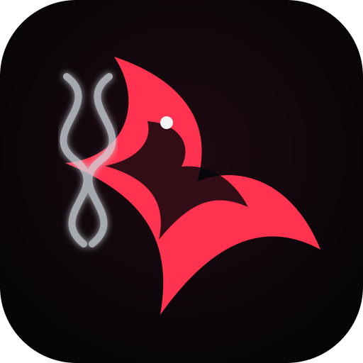
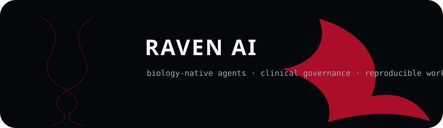

Raven Bio
Agents for genomics, transcriptomics, protein structure, literature grounding, protocols, and reproducible workflows.

RAVEN AIRaven AI is a biology and healthcare agent platform built for researchers, labs, startups, classrooms, and clinical teams that need affordable, inspectable, reproducible AI systems.

Agents for genomics, transcriptomics, protein structure, literature grounding, protocols, and reproducible workflows.
PHI-aware deployment infrastructure, consent, audit logs, evidence retrieval, calculators, and healthcare governance.
A local-first orchestration environment for running agent workflows across desktop, edge, and private infrastructure.
Every part of the ecosystem is moving toward evidence-linked outputs, provenance trails, issue templates, contribution guidelines, CI, architecture docs, and a coherent research-lab identity.